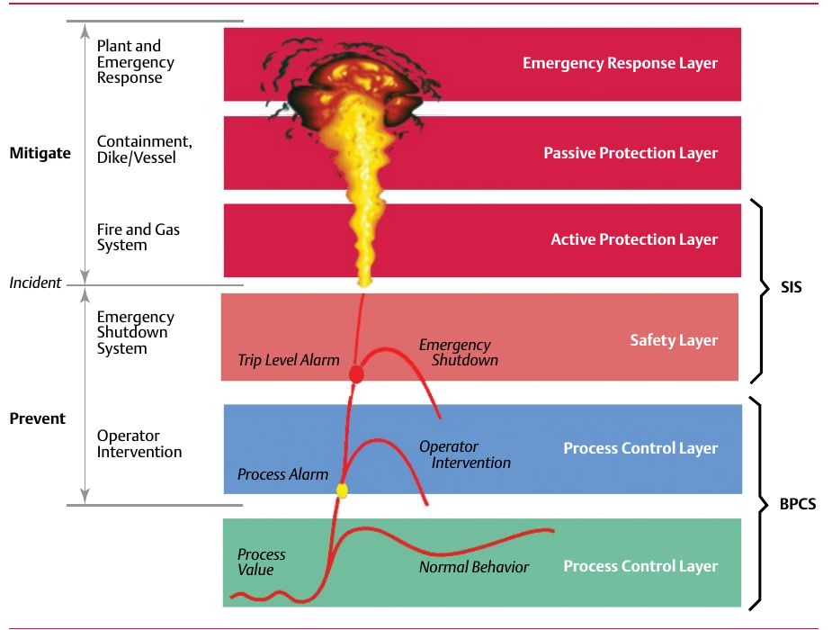

Layers of Protection: Prevent vs. Mitigate

The layers-of-protection model separates six layers into 'Prevent' (Process Control/BPCS, Operator Intervention, SIS) and 'Mitigate' (Active Protection, Passive Protection, Emergency Response) — an SIS's job is specifically to prevent an emergency shutdown scenario, not to clean up after one starts. Component Index: cvh-cmp-layers-of-protection.